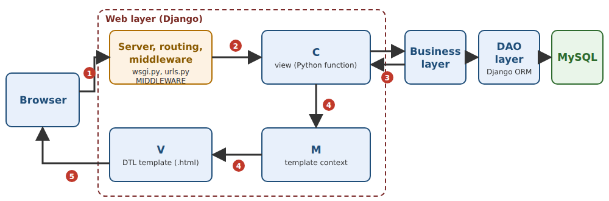
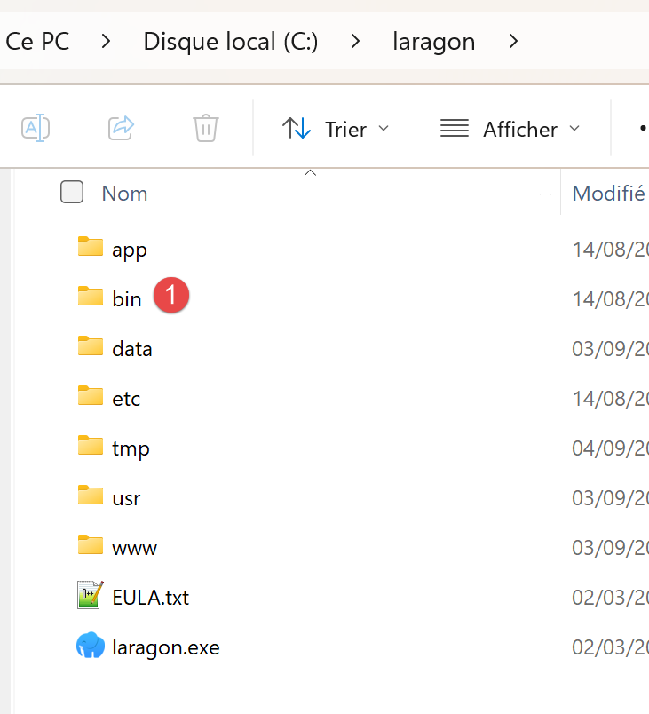
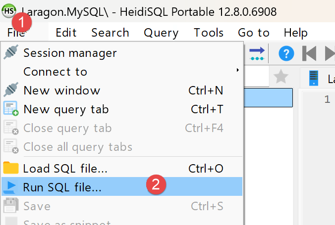

1. Introdução
O PDF do documento está |AQUI|.
Os códigos do documento estão |AQUI|.
Este documento é um produto da IA Claude, da Anthropic. Ele segue o documento “Introdução passo a passo ao framework web [Symfony]” (2026), que por sua vez seguiu os documentos “Introdução passo a passo ao framework web [Laravel],” "Introdução passo a passo ao framework web [Flask]," "Introdução passo a passo ao framework web [Spring MVC]," "Introdução passo a passo ao framework web [ASP.NET Core MVC]," e "Introdução passo a passo ao framework web [NestJS]" (2026). Este documento deixa o mundo [PHP] para voltar à linguagem [Python], a do curso [Flask], mas com um framework de escala totalmente diferente:
- o framework [Symfony] é substituído pelo framework [Django] 6.1, com a linguagem [Python] (versão 3.12 ou superior);
- as views [Twig] são substituídas pelos templates do [Django], escritos em sua linguagem de template, a DTL (Django Template Language);
- os componentes Form e Validator do [Symfony] são substituídos pelos formulários do [Django] (o módulo [django.forms]), que descrevem ao mesmo tempo os campos de um formulário HTML, sua conversão e sua validação;
- o componente Security do [Symfony] (firewall, authenticators, papéis) é substituído por middleware e decoradores escritos especificamente para esse fim, usando a biblioteca [PyJWT] para tokens JWT e a biblioteca [bcrypt] para senhas;
- os event listeners do [Symfony] são substituídos pelo middleware do [Django], que envolve o processamento de cada requisição, e por seus sinais;
- o ORM é substituído pelo ORM do [Django], ainda com base no [MySQL].
O documento segue de perto a estrutura do curso de [Symfony]: primeiro, vários pequenos projetos, cada um focado em um único conceito, seguidos de um estudo de caso completo — uma aplicação web para agendar consultas em um consultório médico — com todos os arquivos totalmente comentados. Os exemplos têm os mesmos números e abordam os mesmos temas dos cursos de [Symfony], [Laravel], [Flask], [Spring MVC] e [ASP.NET Core MVC]: um leitor familiarizado com um desses cursos pode comparar os frameworks caso a caso. No entanto, isso não é necessário: este documento é autossuficiente e não pressupõe nenhum conhecimento prévio desses frameworks. Os únicos pré-requisitos são noções básicas de programação web (o protocolo HTTP, a linguagem HTML) e os fundamentos da linguagem [Python] (variáveis, listas, dicionários, funções, classes, módulos). Os recursos menos comuns do [Python] usados nos exemplos (decoradores, classes de dados, anotações de tipo, gerenciadores de contexto, geradores etc.) são explicados quando aparecem pela primeira vez.
1.1. O papel do Django em uma aplicação web
Uma aplicação web costuma ser construída em camadas, e cada camada se comunica apenas com suas vizinhas imediatas:

- a camada web recebe do navegador as requisições HTTP e devolve a ele páginas HTML. É a camada que o [Django] nos ajuda a escrever;
- a camada de negócio contém as regras de negócio da aplicação (por exemplo, “um paciente só pode ter uma consulta futura”). Ela não sabe nada sobre a web: poderia servir igualmente a uma aplicação de linha de comando;
- a camada de acesso a dados (camada DAO, de Data Access Object) lê e grava no banco de dados. Usaremos o ORM (Object Relational Mapper) do [Django], que mapeia linhas de tabelas para objetos [Python].
A própria camada web segue o padrão MVC (Model-View-Controller). É aqui que é preciso prestar atenção à terminologia, pois o [Django] não usa os termos do MVC em seu sentido habitual. A documentação do [Django] fala da arquitetura MTV (Model–Template–View):
- o que o MVC chama de controller (C), o [Django] chama de view: é uma função (ou uma classe) [Python] que processa um tipo de requisição (por exemplo, [GET /schedule]). Uma view lê os parâmetros da requisição, invoca a camada de negócio e depois escolhe a página a exibir. No curso de [Symfony], isso era uma action de um controller;
- o que o MVC chama de view (V), o [Django] chama de template: um arquivo HTML que contém expressões [{{ ... }}] e instruções [{% if %}], [{% for %}]..., que o engine de templates substitui por dados. No curso de [Symfony], era uma view ([Twig]);
- o que o MVC chama de model (M) — o conjunto de dados passados à página —, o [Django] chama de contexto do template: um dicionário [Python];
- por fim, o que o [Django] chama de model é uma classe [Python] que representa uma tabela do banco de dados (o arquivo [models.py]): o que o [Symfony] chamava de entidade.
Este documento usa a terminologia do [Django], já que é a utilizada em sua documentação, em suas mensagens de erro e em seus nomes de arquivos ([views.py], [templates], [models.py]): aqui, uma view é, portanto, sempre a função [Python] que processa uma requisição, e um template é o arquivo HTML que gera a página. O termo “model” tem dois sentidos, que o contexto sempre distingue: no Capítulo 2, o model de uma view designa os dados que ela recebe da requisição, descritos por uma classe; a partir do Capítulo 7, um model do [Django] é uma classe do ORM. Por fim, o termo “template de página” (ou “layout”) designa o template comum do qual as outras páginas herdam (Exemplo 15).
O processamento de uma requisição segue as etapas numeradas do diagrama:
- 1: o navegador envia uma requisição, por exemplo HTTP;
- 2: o servidor web recebe a requisição e a repassa à aplicação [Django] por meio do objeto [application] do arquivo [config/wsgi.py]. Durante o desenvolvimento, esse servidor é o que vem incluído no [Django], iniciado pelo comando [python manage.py runserver]; em produção, será um servidor [Python], como o [gunicorn] ou o [waitress], frequentemente colocado atrás de um servidor web como o [nginx]. O [Django] encaminha a requisição por uma série de componentes de middleware, classes do [Django] e da aplicação que intervêm antes e depois da view (gerenciamento de sessão, proteção anti-CSRF, definição de idioma, segurança etc.), e compara o caminho solicitado com as rotas da aplicação — descritas nos arquivos [urls.py] — para selecionar a view responsável por tratar essa requisição: é o roteamento;
- 3: a view solicita à camada de negócio os dados de que precisa; a camada de negócio, se necessário, aciona a camada DAO, que consulta o banco de dados [MySQL] em SQL, por meio do ORM;
- 4: a view monta o contexto (o model M) e instrui o engine de templates a gerar a página (função [render]);
- 5: a página HTML gerada pelo template é a resposta da view, que o [Django] devolve ao navegador depois de fazê-la passar de volta pelo middleware.
O [Django] é, junto com o [Flask], um dos dois grandes frameworks web do mundo [Python]. Gratuito e de código aberto, foi criado em 2003 por Adrian Holovaty e Simon Willison no Lawrence Journal-World, um jornal do Kansas, e lançado em 2005. Seu nome homenageia o guitarrista de jazz Django Reinhardt. Hoje é desenvolvido por uma comunidade sob a égide da Django Software Foundation e funciona em qualquer lugar onde o [Python] ([Windows], [Linux], [macOS]) funcione. Sites de grande tráfego o utilizam ([Instagram], [Pinterest], [Mozilla]...). Seu lema, “o framework web para perfeccionistas com prazos apertados”, reflete bem sua abordagem: enquanto o [Flask] oferece apenas um núcleo complementado por extensões, o [Django] vem com “baterias incluídas”: roteamento, templates, formulários e validação, ORM e migrações de banco de dados, sessões, mensagens, traduções, cache, proteção contra ataques comuns (CSRF, injeção de SQL, clickjacking) e até uma interface de administração de dados gerada automaticamente. Tudo isso forma um conjunto coeso, documentado em um único lugar e projetado para funcionar em conjunto. Em comparação com o [Symfony], [Django] faz escolhas diferentes: sem contêiner de serviços nem injeção de dependência, mas com módulos [Python] que são importados; configuração escrita em [Python], em um único arquivo ([settings.py]), em vez de em [YAML]; views que são simples funções. [Django] também segue um calendário regular de versões: uma versão a cada oito meses, aproximadamente, e uma versão de “suporte de longo prazo” (LTS) a cada dois anos (5.2 em 2025, 6.2 em 2027), com avisos de descontinuação que sempre antecedem em duas versões a remoção de um recurso. [Django] pode criar servidores que devolvem JSON a um cliente [JavaScript] ([Angular], [React], [Vue.js], [Flutter]...), frequentemente com a extensão [Django REST framework], ao contrário das aplicações web tradicionais, em que o servidor gera as páginas HTML e o navegador apenas as exibe. Este documento examina esse segundo caso de uso.
Uma diferença fundamental em relação ao [PHP] explica muito do [Django]: a aplicação é carregada uma única vez, quando o servidor inicia, e depois permanece na memória para processar todas as requisições seguintes (Exemplo 01). O que é construído na inicialização (a configuração, a tabela de rotas, os objetos armazenados em variáveis de módulo) é compartilhado por todas as requisições. É o oposto do [Symfony], que reconstruía a aplicação a cada requisição: voltaremos a esse ponto com frequência, particularmente no capítulo sobre escopos de dados.
1.2. Ferramentas utilizadas
Os exemplos foram escritos e testados com as seguintes ferramentas (sua instalação é descrita no apêndice):
- [Python] 3.13 (qualquer versão 3.12 ou superior serve: é o requisito mínimo para o [Django] 6.1);
- [pip], o gerenciador de bibliotecas do [Python], e o módulo [venv], que cria ambientes virtuais (ambos incluídos no [Python]);
- o editor [Visual Studio Code], com as extensões da Microsoft [Python] e [Pylance] (análise de código, execução, depuração) e uma extensão para templates do [Django] (realce de sintaxe);
- um navegador moderno ([Chrome], [Firefox], [Edge]);
- a ferramenta de linha de comando [curl], que exibe respostas HTTP brutas (ela está incluída no [Windows] 10 e 11);
- o SGBD [MySQL] 8.4 ou superior (ou [MariaDB] 10.11 ou superior), por exemplo o do [Laragon] no [Windows], a partir do capítulo sobre acesso a dados e para o estudo de caso.
O [Django] e as outras bibliotecas não fazem parte do [Python]: [pip] as baixa do repositório PyPI (Python Package Index) durante a instalação (portanto, é preciso estar conectado à Internet nesse dia) e as instala em um ambiente virtual, uma pasta específica do projeto (veja abaixo). Cada projeto descreve suas bibliotecas em um arquivo [requirements.txt]. A tabela a seguir lista as principais, com as versões utilizadas:
Biblioteca | Função | Versão |
[Django] | O framework: servidor de desenvolvimento, roteamento, views, middleware, templates, formulários, sessões, mensagens, traduções, cache, ORM; ele instala as duas bibliotecas de que precisa: [asgiref] (a ligação entre código síncrono e assíncrono) e [sqlparse] (formatação dos comandos SQL exibidos) | 6.1.1 |
[Babel] | Formatação de números, valores monetários e datas de acordo com o idioma (exemplo 16) | 2.18.0 |
[PyJWT] | Tokens JWT (capítulo sobre autenticação) | 2.15.0 |
[mysqlclient] | O driver [MySQL] usado pelo [Django] (Exemplo 28 e estudo de caso) | 2.3.0 |
[bcrypt] | Hash de senhas (estudo de caso) | 5.0.0 |
O [Django] normalmente é instalado pelo [pip], e depois um projeto é criado com o comando [django-admin startproject], que é instalado pelo [Django] (veja os apêndices):
Esse comando cria uma pasta chamada [my_project] que contém um arquivo chamado [manage.py] e um pacote chamado [my_project] composto por cinco arquivos ([settings.py], [urls.py], [wsgi.py], [asgi.py], [__init__.py]). Em seguida, as aplicações são adicionadas com o comando [python manage.py startapp name], que cria uma pasta contendo sete arquivos. É assim que se inicia um projeto real. Para fins de aprendizado, esse método tem um inconveniente: o arquivo [settings.py] gerado já contém cerca de cem linhas de código, que ativam cerca de dez aplicações e sete componentes de middleware — cuja finalidade ainda não está clara. Por isso, os exemplos deste documento partem do extremo oposto: o Exemplo 01 é a menor aplicação [Django] possível, e cada exemplo acrescenta apenas os arquivos e as configurações de que precisa, escritos e comentados à mão. O estudo de caso final segue a estrutura de uma aplicação [Django] padrão.
1.3. Executando o estudo de caso
1.3.1. Instalando o Laragon
O estudo de caso requer o SGBD [MySQL]. O Laragon pode fornecê-lo e muito mais. Em setembro de 2026, o Laragon está disponível na URL e [Download Laragon – Fast & Modern Dev Environment]. O Laragon inclui ferramentas que permitem instalar um servidor web e o SGBD [MySQL]:

- em [1], um servidor web Apache;
- em [2], o SGBD [MySQL];
- em [3], uma ferramenta de mensageria que não usaremos;
- [4] inicia todos os serviços (Apache, [MySQL], MailPit);
- [5] exibe a página web da URL e [http://localhost]. Por padrão, essa URL aponta para a pasta <laragon-install>\www, em que <laragon-install> é a pasta de instalação do Laragon;
- em [6], inicia a ferramenta HeidiSQL, que permite gerenciar bancos de dados MySQL. Usaremos essa ferramenta para criar o banco de dados do estudo de caso;
- em [7], abre um terminal em que todos os binários necessários ao Laragon estão no PATH;
- em [8], abre uma janela do Windows Explorer na pasta associada à URL e [http://localhost];
A pasta de instalação do Laragon contém os seguintes itens:

Em [1], a pasta [bin] contém numerosas aplicações:

- Em [1], o servidor web Apache;
- em [2], um terminal de linha de comando;
- em [3], um cliente [git] que permite gerenciar as diferentes versões de um projeto;
- em [4], um gerenciador de banco de dados;
- [5], um gerenciador de e-mail;
- em [6], o SGBD e [MySQL];
- [7], outro servidor web;
- em [8], [node.js] para executar scripts JavaScript;
- [9], um editor de texto;
- [10], o interpretador PHP;
- [11], o interpretador [Python];
- [12], um servidor de cache;
O Laragon vem com um ambiente de desenvolvimento completo. Neste curso, usaremos apenas o SGBD, [MySQL], [6], e a ferramenta [heidisql] para gerenciá-lo graficamente. O interpretador [Python] [11] do Laragon pode não ser recente o bastante para o [Django] 6.1 (é necessária a versão 3.12 ou superior): em vez dele, instalaremos o [Python] a partir de seu site oficial (veja os apêndices), marcando no instalador a caixa que adiciona o [python] ao PATH já existente da máquina.
O README mencionado no estudo de caso indica que você deve digitar os seguintes comandos em uma janela de terminal aberta na pasta da aplicação:
para criar um ambiente virtual chamado [Python] e uma pasta chamada [.venv], onde as bibliotecas da aplicação serão instaladas;
para ativar esse ambiente no terminal (no [Linux] e no [macOS]: [source .venv/bin/activate]). O prompt do terminal passa então a começar com [(.venv)];
para instalar as bibliotecas [Python] necessárias ao estudo de caso ([Django], [mysqlclient], [PyJWT], [bcrypt]);
para executar o estudo de caso. Se você usa um terminal [PowerShell] no VSCode, o [PowerShell] pode se recusar a executar o script de ativação, exibindo uma mensagem informando que “a execução de scripts está desabilitada neste sistema”. Para habilitá-la, apenas para a sua conta de usuário, digite o seguinte uma única vez em um terminal [PowerShell]:
Será preciso reiniciar o VSCode para que essa alteração tenha efeito. Como alternativa, no VSCode, você pode selecionar um terminal chamado [Command Prompt] em vez do [PowerShell], no qual o script [activate] é executado sem essa autorização.
Para criar o banco de dados [MySQL] necessário ao estudo de caso, proceda da seguinte forma:

- Em [1], todos os serviços devem estar iniciados;
- em [2], a opção [Database] permite gerenciar o banco de dados;
A opção [Database] inicia um utilitário chamado HeidiSQL:

- Em [1], você pode selecionar diversas opções de SGBD. O valor padrão fornecido é o SGBD MySQL. Isso é adequado;
- em [2], você se conecta ao HeidiSQL;


- Em [1-2], execute o arquivo SQL e depois selecione o arquivo [dbrdvmedecins2.sql], que você encontrará na pasta [django-sept-2026/rdvmedecins2-django/database]:

A execução do arquivo [3] criará o banco de dados [dbrdvmedecins2] usado pelo estudo de caso. Para visualizá-lo, pressione F5 no HeidiSQL para atualizar a exibição.
Nota: as capturas de tela a seguir mostram um banco de dados chamado [dbrdvmedecins], enquanto o banco de dados do estudo de caso se chama [dbrdvmedecins2]. Os dois bancos são praticamente idênticos, por isso consideramos desnecessário fazer novas capturas de tela.

O banco de dados [dbrdvmedecins] foi criado. Este é o seu conteúdo:

- em [1-3], a tabela [clients];
- [id] é a chave primária da tabela;
- [version] é o número de versão da linha. Esse número é incrementado a cada modificação da linha;
- [titre, nom, prenom] identificam a pessoa;

- em [1-3], a tabela [medecins];
- [id] é a chave primária da tabela;
- [version] é o número de versão da linha;
- [titre, nom, prenom] identificam a pessoa;

- Em [1-3], a tabela dos horários de consulta dos médicos:
- [id]: chave primária;
- [version]: número de versão da linha;
- [id_medecin]: chave estrangeira que referencia a chave primária do médico;
- [hdebut, mdebut]: hora e minutos do início da consulta. Assim, [8,20] significa 8h20.
- [hfin, mfin]: hora e minutos do fim da consulta.

- Em [1-3], a tabela [rv] das consultas agendadas;
- [id]: chave primária;
- [version]: número de versão;
- [jour]: data da consulta;
- [id_creneau]: chave estrangeira que referencia a chave primária do horário de consulta. Como um horário está vinculado a um médico, sabemos qual médico atende essa consulta;
- [id_client]: chave estrangeira para o número (chave primária) do cliente que faz a solicitação;

- em [1-3], a tabela [users], que lista os usuários autorizados a usar a aplicação;
- [id, version]: chave primária, número de versão;
- [login, password]: credenciais do usuário;
- [nom]: nome do usuário;
- [role]: o papel do usuário. [ADMIN] tem acesso total; [MEDECIN] consulta a própria agenda; [PATIENT] (um cliente do consultório) agenda e cancela as próprias consultas;
1.3.2. Executando o estudo de caso
Nota do revisor: aconselho o leitor a executar imediatamente o estudo de caso conforme descrito a seguir. Depois de entender bem o papel desta aplicação de agendamento, peça à sua IA favorita que modifique a aplicação da seguinte forma: a partir de agora, cada médico poderá:
- definir seus próprios horários de consulta entre duas datas. Isso lhe permitirá ajustar a agenda conforme a necessidade;
- remover certos horários da agenda em um determinado dia — por exemplo, se estiver indisponível por motivos pessoais;
A modificação não é trivial, pois envolve uma alteração na estrutura do banco de dados. Peça à IA que lhe forneça o novo código da aplicação e o script SQL para criar o novo banco de dados. Para isso, será preciso fornecer a ela o arquivo ZIP com o projeto completo, bem como o script SQL do banco de dados antigo.
Além disso, não revisei o curso criado pelo Claude. Ele já havia produzido os cursos [NestJS], [ASP.NET Core MVC], [Spring MVC] e [Flask], todos perfeitos. Presumi que o mesmo valesse para este. Se você tiver dificuldade para entender algo, a solução é sempre a mesma: peça à sua IA favorita que explique o que você não entende. O Claude, por exemplo, é muito bom nisso. Talvez seja preciso fazer o “upload” do exemplo que você não entende para ele.
Fim da nota.
O estudo de caso ao final deste documento é uma aplicação completa. É provável que os leitores queiram vê-la em funcionamento antes de mergulhar nos detalhes do framework: veja como executá-la. Ela está na pasta [rdvmedecins2-django], ao lado da pasta [examples]:
É preciso ter instalado o [Python] (versão 3.12 ou superior), o [Visual Studio Code], e o [MySQL] (veja os apêndices). Em seguida:
- Crie o banco de dados [dbrdvmedecins2] executando o script [rdvmedecins2-django/database/dbrdvmedecins2.sql]. Com o [Laragon], abra a ferramenta [HeidiSQL] (botão Database) e execute o script pelo menu File / Run SQL (veja acima). Na linha de comando, a partir da pasta [rdvmedecins2-django]:
- Abra a pasta [rdvmedecins2-django] no [Visual Studio Code] (menu File / Open Folder) e depois abra um terminal (menu Terminal / New Terminal);
- crie o ambiente virtual da aplicação, ative-o e depois instale suas bibliotecas: o [pip] lê o arquivo [requirements.txt], baixa o [Django] e as demais bibliotecas e as coloca na pasta [.venv] da aplicação (leva algumas dezenas de segundos). No [Windows]:
- No [Linux] e no [macOS], o segundo comando é [source .venv/bin/activate]. O [Visual Studio Code] exibe uma janela perguntando se você deseja usar esse ambiente para a pasta: aceite; os terminais abertos depois o ativarão automaticamente;
- verifique a conexão com o banco de dados. A aplicação se conecta ao [MySQL] em [127.0.0.1], porta 3306, com o usuário [root] sem senha (as configurações padrão do [Laragon]). Se a sua conta [root] tiver senha, informe-a no arquivo [.env] da aplicação, na linha [DB_PASSWORD=];
- execute a aplicação:
- O [Django] exibe:
O servidor de desenvolvimento está escutando na porta 8081 da máquina ([127.0.0.1], ou seja, [localhost]). Cada requisição recebida será registrada no console, junto com os comandos SQL enviados ao banco de dados;
- Abra a URL [http://localhost:8081] em um navegador:

- Faça login com uma das contas de demonstração, cuja senha é igual ao nome de usuário: [admin] (administrador), [pelissier], [tatou], [dupont] (médicos), [martin], [durand], [bistrou], [german] (pacientes). Também é preciso digitar os caracteres da imagem, em maiúsculas ou minúsculas.
Ao iniciar, o comando [runserver] verifica o projeto e, junto com o [MySQL], conecta-se ao banco de dados para esse fim: se o banco de dados estiver inacessível, o servidor não inicia e o console exibe o erro ao final de uma longa pilha de chamadas. Se a mensagem for [(2002, "Can't connect to server on '127.0.0.1' (10061)")], significa que o [MySQL] não foi iniciado; com [(1045, "Access denied for user 'root'@'localhost' (using password: NO)")], significa que a senha está incorreta; com [(1049, "Unknown database 'dbrdvmedecins2'")], significa que o script SQL não foi executado. Se o comando [python manage.py runserver] falhar com a mensagem [ModuleNotFoundError: No module named 'django'], significa que o ambiente virtual não está ativado (ou que o comando [pip install] não foi executado); se a mensagem de erro for [Error: That port is already in use.], significa que a porta 8081 já está em uso (por outra versão da aplicação, por exemplo). O arquivo [README.md] da aplicação descreve outros cenários. Pare a aplicação com [Ctrl-C] no terminal ([Ctrl-Pause] no [Windows], como indica a mensagem do [Django], mas [Ctrl-C] também funciona).
Depois de entender bem a finalidade desta aplicação de agendamento, o leitor pode pedir à sua IA favorita que a modifique da seguinte forma: a partir de agora, cada médico poderá:
- definir seus próprios horários de consulta entre duas datas. Isso lhe permitirá ajustar a agenda conforme a necessidade;
- remover certos horários da agenda em um determinado dia — por exemplo, se estiver indisponível por motivos pessoais.
A modificação não é trivial, pois envolve uma alteração na estrutura do banco de dados. É preciso pedir à IA o novo código da aplicação e o script SQL — que cria o novo banco de dados —, fornecendo a ela o arquivo ZIP com o projeto completo, bem como o script SQL do banco de dados antigo. Da mesma forma, se você encontrar neste documento um ponto que não entende, a solução é sempre a mesma: peça à sua IA favorita que explique o que você não entende, fornecendo o exemplo relevante, se necessário.
O estudo de caso ao final do documento demonstra como usar a aplicação e depois explica cada um de seus arquivos.
1.4. Exemplos
Os exemplos ficam na pasta [examples], com uma subpasta por exemplo:
Cada exemplo é uma pequena aplicação ([Django]) que funciona por conta própria. Todos os exemplos usam as mesmas bibliotecas, descritas no arquivo [examples/requirements.txt]:
- linhas 1–2: comentários; em [Python], como neste arquivo, um comentário se estende de [#] até o fim da linha;
- linhas 3–6: as bibliotecas, uma por linha, com suas versões exatas: o próprio [Django] , [mysqlclient] (acesso ao [MySQL], Exemplo 28), [PyJWT] (os tokens JWT, exemplo 25) e [Babel] (formatação de números e datas conforme o idioma, exemplo 16). O operador [==] impõe a versão; [>=6.1,<6.2] aceitaria todas as versões 6.1.x. As duas bibliotecas exigidas pelo [Django] ([asgiref], [sqlparse]) não estão listadas: o [pip] as instala automaticamente, já que o [Django] as declara.
O [Python] reconhece apenas uma pasta de bibliotecas por interpretador. Para garantir que cada projeto tenha suas próprias bibliotecas nas versões apropriadas, cria-se um ambiente virtual: uma pasta contendo uma cópia leve do interpretador e sua própria pasta de bibliotecas ([Lib/site-packages] no [Windows], [lib/python3.13/site-packages] nos demais sistemas). Para executar os exemplos, crie um ambiente virtual e instale nele as bibliotecas de uma vez por todas, em um terminal aberto na pasta [examples]:
[python -m venv .venv] executa o módulo [venv] do [Python], que cria o ambiente na pasta [.venv]. O script [activate] (no [Linux] e no [macOS]: [source .venv/bin/activate]) modifica o PATH do terminal: os comandos [python] e [pip] passam então a se referir aos do ambiente, e o prompt começa com [(.venv)]. [pip install -r requirements.txt] instala as bibliotecas do arquivo. O ambiente [examples/.venv] é compartilhado pelos 28 exemplos: ele é ativado em cada terminal em que se queira executar um deles. O comando [pip list] exibe as bibliotecas instaladas, e [deactivate] desativa o ambiente. A pasta [common] contém o framework CSS [Bootstrap] ([common/static/bootstrap]), compartilhado pelos exemplos que formatam suas páginas (a partir do Exemplo 15).
Quase todos os exemplos têm a mesma estrutura — a de um projeto [Django] padrão, reduzido ao essencial. Por exemplo, a estrutura do Exemplo 13:
- [manage.py]: a ferramenta de linha de comando do projeto, que inicia, entre outras coisas, o servidor de desenvolvimento (Exemplo 01);
- [config]: o pacote de configuração do projeto: suas configurações ([settings.py]), suas rotas ([urls.py], Exemplo 02) e seu ponto de entrada para um servidor web ([wsgi.py]). Um projeto criado por [django-admin startproject] dá a esse pacote o nome do projeto; em todos os exemplos nos referimos a ele como [config] para deixar claro o seu papel;
- [pages]: uma aplicação [Django]: um pacote [Python] que reúne as views ([views.py]), suas rotas ([urls.py]) e as classes de que elas precisam. Um projeto é um conjunto de aplicações, que a configuração [INSTALLED_APPS] lista (exemplo 02);
- [templates]: os templates (a partir do capítulo sobre templates).
Para executar um exemplo, abra um terminal em sua pasta (no [Visual Studio Code]: clique com o botão direito na pasta do exemplo e selecione "Open in the built-in terminal"), ative o ambiente virtual dos exemplos ([..\.venv\Scripts\activate] no [Windows], [source ../.venv/bin/activate] nos demais sistemas) e digite:
Todos os exemplos escutam na porta 8000: só é possível executar um de cada vez (ou é preciso mudar a porta: [python manage.py runserver 8001]). Pare o servidor com [Ctrl-C] no terminal. Não é preciso reiniciar o servidor depois de modificar um arquivo [Python] ou um template: o servidor de desenvolvimento monitora os arquivos do projeto e reinicia automaticamente quando qualquer um deles muda (exemplo 01).
Ao abrir a pasta [examples] no [Visual Studio Code], é preciso indicar o interpretador do ambiente virtual para a extensão [Python] (comando Python: Select Interpreter na paleta de comandos, [Ctrl-Maj-P], e depois [.venv\Scripts\python.exe]): a extensão [Pylance] passa então a analisar todos os arquivos com as bibliotecas do ambiente, incluindo o [Django]: em cada arquivo, você aproveita o autocompletar de código, a navegação até a definição de uma classe ou função (tecla [F12]) e a indicação de erros. Como todos os exemplos têm um pacote [config], a análise pode confundir os pacotes de dois exemplos; isso não afeta a execução, já que cada exemplo é executado separadamente a partir de sua própria pasta. Para evitar essa confusão, basta abrir diretamente a pasta do exemplo.
1.5. Conteúdo do documento
O documento está organizado da seguinte forma:
Capítulo | Tema | Exemplos |
Views, roteamento, respostas | Da requisição à view: rotas, aplicações, respostas, redirecionamentos, serviços compartilhados | 01 a 06 |
O modelo da view | Parâmetros de requisição: leitura, conversão, validação pelos formulários do [Django], requisições POST | 07 a 12 |
Templates e formulários | a linguagem de template do [Django], templates de página, fragmentos, tags e filtros personalizados, formulários, validação, PRG, proteção anti-CSRF | 13 a 21 |
Internacionalização | Uma aplicação em francês e inglês | 22 |
Escopos de dados | requisição, sessão, cache, cookies | 23 |
O ciclo de vida de uma requisição | sinais, middleware, conversores de rota, tratamento de erros | 24 |
Autenticação e autorização | token JWT em um cookie, middleware de autenticação, decoradores, papéis, CAPTCHA, limite de tentativas | 25–27 |
Arquitetura em camadas e acesso a dados | Web / Negócio / DAO com o ORM do [Django] e o [MySQL] | 28 |
Estudo de caso | A aplicação RdvMedecins, explicada arquivo por arquivo | - |
Cada exemplo introduz apenas alguns conceitos novos, e os capítulos se apoiam uns nos outros: o melhor é lê-los em ordem. O estudo de caso, por sua vez, reúne todos os conceitos dos capítulos anteriores: sempre que pertinente, seu comentário remete ao exemplo em que o conceito foi introduzido. Os apêndices descrevem a instalação das ferramentas: [Python], [pip], e os ambientes virtuais, [Visual Studio Code] e suas extensões, [MySQL] junto com o [Laragon], o [curl] e a ferramenta [django-admin].